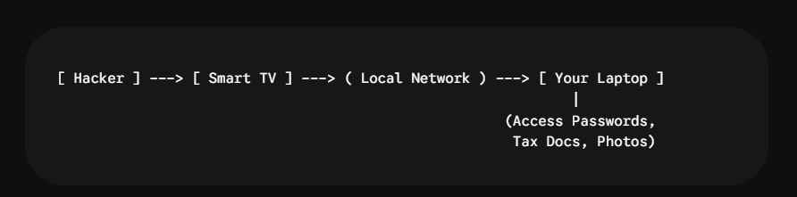
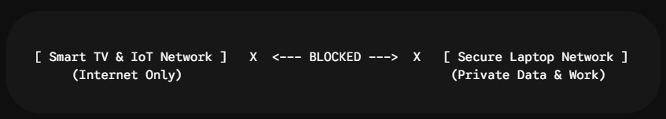

Why Your Smart TV Shouldn’t Talk to Your Laptop: A Practical Guide to Network Segmentation
Imagine inviting a total stranger into your house, pointing to your living room couch, and handing them the keys to your bedroom desk where all your tax documents, private photos, and banking passwords live.
Sounds ridiculous, right? Yet, this is precisely what happens every time you connect a Smart TV to the same home Wi-Fi network as your personal laptop.
Smart TVs, streaming sticks, and low-cost IoT gadgets run complex software that rarely receives security updates. Once a hacker finds a vulnerability in your TV’s outdated browser or apps, they don’t just own your television—they gain a foothold on your network. From there, it takes seconds for them to scan the local area and launch attacks against your laptop.
Here is why network segmentation matters, and how to separate your devices in under 20 minutes.
The Danger of a “Flat” Home Network
Most home Wi-Fi networks are completely “flat.” That means every single device connected to the router can freely send data packets to every other device on the network.

If an attacker compromises your Smart TV through a malicious app or unpatched flaw, a flat network lets them perform lateral movement:
- Network Port Scanning: Discovering your laptop, NAS storage, or personal devices.
- Man-in-the-Middle (MitM) Attacks: Intercepting unencrypted traffic sent across your local network.
- Exploiting Shared Services: Attacking open media shares, printer protocols, or remote desktop tools.
Network Segmentation: Your Digital Firewall
Network segmentation breaks one physical network into multiple isolated virtual zones. By placing your Smart TV and smart home devices in an isolated network, you build an impassable digital wall.

Even if your Smart TV gets fully compromised, the hacker remains trapped inside a sandbox with zero visibility into your laptop or personal files.
3 Quick Steps to Segment Your Network Today
Step 1: Categorize Your Home Devices
Group your household hardware into two strict buckets:
- Private Zone (High Security): Work laptops, personal PCs, mobile phones, primary cloud storage/NAS.
- Isolated Zone (Low Security): Smart TVs, streaming dongles, smart speakers, game consoles, ambient lighting.
Step 2: Leverage Your Router’s “Guest Network”
You don’t need expensive enterprise equipment to segment your traffic:
- Open your browser and navigate to your router’s admin portal (typically 192.168.1.1 or 192.168.0.1).
- Locate the Guest Network settings and switch it on.
- Assign it a distinct name, such as Home_Media_IoT.
- Create a strong, unique password.
Step 3: Disable Local Access & Reconnect
- In your router’s Guest Network menu, ensure settings like “Allow guests to access local network” or “Access Intranet” are turned OFF.
- Turn ON settings labeled “AP Isolation” or “Client Isolation.”
- Disconnect your Smart TV, streaming devices, and smart appliances from your primary Wi-Fi, and re-connect them exclusively to the new Home_Media_IoT network.
Final Thoughts
Securing your personal data doesn’t require complex configurations or costly hardware upgrades. By keeping your Smart TV isolated from your primary laptop, you effectively eliminate lateral threat movement across your home.